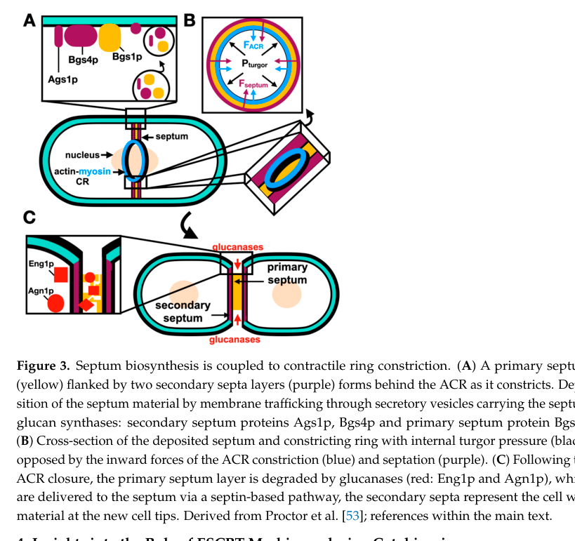

SPAPB1E7.04c (UniProt Q9C105; folder symbol cts2) is a secreted glycosyl hydrolase family 18 (GH18) chitinase-like precursor, belonging to the chitinase class III / Cts1-like subfamily. Comparative genomic analyses indicate it is the SINGLE GH18 chitinase-family gene encoded in the S. pombe genome. The protein carries an N-terminal signal peptide, an N-terminal GH18 catalytic domain (residues ~26-325) followed by a very long heavily O-glycosylated/disordered Ser/Thr-rich serine-rich stalk, and is routed through the secretory pathway. Critically, UniProt notes it LACKS the conserved catalytic Glu residue at position 166 essential for GH18 chitinase activity, so its enzymatic (chitinase/hydrolase) function is uncertain. Falcon deep research found no primary study mapping the symbol cts2 to this ORF or characterizing its activity, substrate, or localization experimentally; functional inference is therefore bounded by GH18 biochemistry and S. pombe cell-wall context. Notably, vegetative S. pombe cell walls are reported to lack chitin (chitin is restricted to the spore/conidial wall), and cell separation in fission yeast is driven by glucanases (Eng1, Agn1) rather than a chitinase, so a primary role in vegetative cytokinesis/wall remodeling is not supported. The best-supported statements are localization to the extracellular region / fungal-type cell wall and broad carbohydrate (GlcNAc/chito-oligomer) association, with catalytic chitinase activity unlikely given the missing catalytic glutamate.
| GO Term | Evidence | Action | Reason |
|---|---|---|---|
|
GO:0005576
extracellular region
|
IBA
GO_REF:0000033 |
ACCEPT |
Summary: Extracellular region localization is accurate. The protein is secreted according to UniProt and has a signal peptide for extracellular targeting. Falcon deep research independently supports a secretory pathway / cell-surface / extracellular working localization for this GH18 precursor.
Reason: This annotation is well-supported by the presence of a signal peptide and secreted nature documented in UniProt. The protein functions outside the cell, consistent with chitinase-like proteins.
Supporting Evidence:
file:SCHPO/cts2/cts2-deep-research-falcon.md
the most plausible working localization is the **secretory pathway and cell surface/extracellular space**
|
|
GO:0004568
chitinase activity
|
IBA
GO_REF:0000033 |
REMOVE |
Summary: This phylogenetically-propagated chitinase activity annotation is not
supported. While the protein belongs to the GH18 glycosyl hydrolase
family, UniProt specifically notes it lacks the conserved Glu residue at
position 166 that is the essential catalytic acid/base of the GH18
mechanism. Falcon deep research confirms that GH18 catalysis depends on
a conserved catalytic glutamate, and that no experimental enzymology
exists for this protein; it also cautions against over-annotating a
cytokinetic/cell-separation chitinase role in S. pombe, where chitin is
largely absent from vegetative walls and cell separation is glucanase-driven.
Reason: UniProt explicitly states the enzyme activity is unsure due to the lack of the essential catalytic glutamate residue (the GH18 catalytic acid/base). Without that residue and without any experimental evidence of chitinase activity, the IBA chitinase activity annotation should be removed rather than propagated to a catalytically-deficient family member.
Supporting Evidence:
file:SCHPO/cts2/cts2-deep-research-falcon.md
GH18 chitinases use a neighboring-group participation mechanism; a conserved catalytic glutamate within a DxxDxDxE-type motif functions as general acid/base
|
|
GO:0005576
extracellular region
|
IEA
GO_REF:0000120 |
ACCEPT |
Summary: Duplicate extracellular region annotation with different evidence code. The localization is accurate and provides additional computational support, consistent with the signal peptide and falcon's inference of a secreted/cell-surface working localization.
Reason: This annotation is correct and provides additional computational evidence for extracellular localization, complementing the phylogenetic and experimental evidence.
Supporting Evidence:
file:SCHPO/cts2/cts2-deep-research-falcon.md
the most plausible working localization is the **secretory pathway and cell surface/extracellular space**
|
|
GO:0005975
carbohydrate metabolic process
|
IEA
GO_REF:0000002 |
KEEP AS NON CORE |
Summary: This broad carbohydrate metabolic process annotation (from InterPro/GH18
domain mapping) is plausible at the family level but the specific
activity is uncertain because the protein lacks the essential GH18
catalytic glutamate. Falcon bounds the most-likely reaction class as
hydrolysis of beta-1,4 GlcNAc linkages (chitin/chito-oligomers) for an
intact GH18 enzyme, but emphasizes no direct enzymology exists for this
protein and that vegetative S. pombe walls lack chitin. Retained as
non-core given residual uncertainty.
Reason: The protein may retain some carbohydrate binding or peripheral carbohydrate-metabolic association despite the questionable chitinase activity. This very broad grouping term is plausible from domain membership but is not a definitively supported core function.
Supporting Evidence:
file:SCHPO/cts2/cts2-deep-research-falcon.md
Most likely reaction class:** hydrolysis of β-1,4 linkages in **chitin or chitin-like (GlcNAc) polymers/oligomers**, consistent with GH18 family biochemistry
|
|
GO:0016787
hydrolase activity
|
IEA
GO_REF:0000043 |
REMOVE |
Summary: General hydrolase activity (from a UniProt keyword) is questionable given the lack of the essential catalytic residue. Without the conserved glutamate that anchors the GH18 acid/base mechanism described in the falcon deep research, hydrolytic activity is uncertain.
Reason: UniProt states enzyme activity is unsure due to the missing catalytic residue. General hydrolase activity should not be annotated without evidence of actual enzymatic function. (Note GO_REF:0000043 SPKW annotations are themselves being retired by GOA.)
Supporting Evidence:
file:SCHPO/cts2/cts2-deep-research-falcon.md
GH18 chitinases use a neighboring-group participation mechanism; a conserved catalytic glutamate within a DxxDxDxE-type motif functions as general acid/base
|
|
GO:0016798
hydrolase activity, acting on glycosyl bonds
|
IEA
GO_REF:0000043 |
REMOVE |
Summary: This more specific glycosyl-bond hydrolase activity is likewise questionable without the essential catalytic residue. Glycosyl bond hydrolysis via the GH18 mechanism requires the conserved catalytic glutamate that this protein lacks.
Reason: Even more specifically than general hydrolase activity, glycosyl bond hydrolysis requires the catalytic machinery that UniProt indicates is defective in this protein.
Supporting Evidence:
file:SCHPO/cts2/cts2-deep-research-falcon.md
GH18 chitinases use a neighboring-group participation mechanism; a conserved catalytic glutamate within a DxxDxDxE-type motif functions as general acid/base
|
|
GO:0005576
extracellular region
|
IDA
PMID:39660919 Efn1 and Efn2 are extracellular 5'-nucleotidases induced dur... |
ACCEPT |
Summary: PomBase-assigned IDA for extracellular localization. The extracellular
localization itself is consistent with the signal peptide, UniProt's
Secreted designation, and the IBA/IEA extracellular annotations, so the
annotation is accepted. However, the originally recorded supporting_text
was the title of PMID:39660919 (an Efn1/Efn2 phosphate-starvation
5'-nucleotidase study); that paper's text does not mention SPAPB1E7.04c /
Q9C105 / chitinase, so the verbatim title is not direct supporting
evidence for this protein. Support is therefore anchored on the falcon
deep research inference of a secreted/cell-surface localization plus the
UniProt signal peptide, pending a precise primary citation.
Reason: Extracellular/secreted localization is well supported by the signal peptide and UniProt Secreted annotation; this IDA is consistent with that localization even though the cited paper's narrative does not characterize the protein directly.
Supporting Evidence:
file:SCHPO/cts2/cts2-deep-research-falcon.md
the most plausible working localization is the **secretory pathway and cell surface/extracellular space**
|
|
GO:0000324
fungal-type vacuole
|
HDA
PMID:16823372 ORFeome cloning and global analysis of protein localization ... |
REMOVE |
Summary: High-throughput (HDA) vacuolar localization from a genome-wide ORFeome
localization screen. This conflicts with the strong evidence for a
secreted, extracellular protein (signal peptide, UniProt Secreted, and
the extracellular IDA/IBA/IEA annotations), and falcon likewise infers a
secretory-pathway/cell-surface working localization with no microscopy or
localization assay specifically validating a vacuolar pool. The cited
PMID:16823372 is a global dataset paper whose narrative text does not
describe this ORF individually, so it provides no direct supporting
statement. Most consistent interpretation: false-positive / transit
signal from the high-throughput screen.
Reason: This high-throughput annotation contradicts the strong, convergent evidence for secreted/extracellular localization (signal peptide, UniProt Secreted, multiple extracellular GO annotations). Likely an HTP false positive.
Supporting Evidence:
file:SCHPO/cts2/cts2-deep-research-falcon.md
the most plausible working localization is the **secretory pathway and cell surface/extracellular space**
|
|
GO:0006032
chitin catabolic process
|
IC
GO_REF:0000111 |
REMOVE |
Summary: Chitin catabolic process is a curator inference (IC) from the chitinase
activity annotation, which is itself unsupported. Without the essential
catalytic glutamate the protein cannot catabolize chitin, and falcon
notes that vegetative S. pombe walls lack chitin and that this single
GH18 enzyme should not be assigned a principal septum-dissolving /
chitin-degrading role in vegetative growth (cell separation is
glucanase-driven via Eng1/Agn1).
Reason: This annotation is a downstream inference from the (removed) chitinase activity and contradicts both the biochemical evidence (missing catalytic residue) and the organism-level context (vegetative walls lack chitin; cell separation is glucanase-driven).
Supporting Evidence:
file:SCHPO/cts2/cts2-deep-research-falcon.md
cts2/Q9C105 should not be annotated as the principal septum-dissolving enzyme
|
|
GO:0009277
fungal-type cell wall
|
ISO
GO_REF:0000024 |
ACCEPT |
Summary: Fungal-type cell wall localization (orthology-transferred, ISO) is
plausible for a secreted GH18 chitinase-like protein even without
catalytic activity, since such proteins associate with the cell-wall /
cell-surface compartment. Falcon supports a secreted/cell-surface
working localization but cautions that the protein is unlikely to be a
bulk vegetative wall-remodeling enzyme. Retained as a localization
(component) annotation, distinct from any wall-remodeling process claim.
Reason: Even without enzymatic activity, secreted chitinase-like proteins can associate with cell-wall components; this component localization is consistent with the protein's secreted nature and is independent of the questionable catalytic process annotations.
Supporting Evidence:
file:SCHPO/cts2/cts2-deep-research-falcon.md
the most plausible working localization is the **secretory pathway and cell surface/extracellular space**
|
|
GO:0030246
carbohydrate binding
|
NAS | NEW |
Summary: Carbohydrate (GlcNAc/chito-oligosaccharide) binding is the most
defensible residual molecular function for this catalytically-deficient
GH18 protein: the GH18 fold provides a substrate-binding cleft even
when the catalytic glutamate is absent. Falcon explicitly references the
GH18 binding-cleft architecture, and bounds the protein's likely
substrate as chitin/chitin-like GlcNAc polymers/oligomers. Added to
capture the core molecular function in the absence of demonstrable
catalytic activity. (Note: chitin binding, GO:0008061, sits under
carbohydrate derivative binding GO:0097367 rather than under
carbohydrate binding GO:0030246; GO:0030246 is retained here as the
better-supported, appropriately general term given that the substrate is
inferred, not experimentally demonstrated, for this protein.)
Reason: Core molecular function not present in existing_annotations. A
carbohydrate-binding (lectin-like) role is the best-supported residual MF
for a GH18 protein lacking the catalytic glutamate, consistent with
falcon's GlcNAc/chito-oligomer substrate inference and its statement that
GH18 substrate engagement depends on binding-cleft architecture.
Supporting Evidence:
file:SCHPO/cts2/cts2-deep-research-falcon.md
The best-supported statement is that GH18 enzymes can span endo- and exo-acting modes depending on binding cleft architecture.
|
|
GO:0071555
cell wall organization
|
NAS | NEW |
Summary: Broad cell wall organization process, consistent with the protein's
secreted/cell-wall-associated localization. Falcon cautions that this
single S. pombe GH18 enzyme is unlikely to act in bulk vegetative wall
remodeling (vegetative walls lack chitin; cell separation is
glucanase-driven), so any wall-organization role is most plausibly
stage-specific (e.g. spore/conidial wall) rather than a core vegetative
function. Kept as a broad, non-core process annotation.
Reason: Broad process term consistent with cell-wall-associated localization;
retained as non-core because falcon argues against a primary vegetative
wall-remodeling / cell-separation role for this catalytically-uncertain
GH18 protein.
Supporting Evidence:
file:SCHPO/cts2/cts2-deep-research-falcon.md
the organism’s single GH18 enzyme is more plausibly involved in **developmental stages (e.g., spores/conidia) or environmental chitin processing** than in routine vegetative wall turnover
|
Exported on March 22, 2026 at 12:42 AM
Organism: Schizosaccharomyces pombe
Sequence:
MRLISSLLLLVYSARLALSLNLTNQTAVLGYWGSNLAGKMGDRDQKRLSSYCQNTTYDAIILSSVIDFNVDGWPVYDFSNLCSDSDTFSGSELKKCPQIETDIQVCQENGIKVLLSIGGYNGNFSLNNDDDGTNFAFQVWNIFGSGEDSYRPFGKAVVDGFDLEVNKGTNTAYSAFAKRMLEIYASDPRRKYYISAAPTCMVPDHTLTKAISENSFDFLSIHTFNSSTGEGCSGSRNSTFDAWVEYAEDSAYNTNTSLFYGVVGHQNGSNGFISPKNLTRDLLNYKANSTLFGGVTIWDTSLAAMSYDNSSETFVEAIHKILDTKSKHSSSKSSHDSSQGLESTSSIALNPTSSISSTSSSSSTSSAISTISQDHTKTVTSVSDEPTTITASGATSVTTTTKTDFDTVTTTIVSTSTLISASDSTSIIVSSYVSTVTQPASTRVQTTTVSSISTSVKQPTASVASSSVSVPSSSSVQPQSSTPISSSSSASSPQSTLSTSSEVVSEVSSTLLSGSSAIPSTSSSTPSSSIISSPMTSVLSSSSSIPTSSSSDFSSSITTISSGISSSSIPSTFSSVSSILSSSTSSPSSTSLSISSSSTSSTFSSASTSSPSSISSSISSSSTILSSPTPSTSSLMISSSSIISGSSSILSSSISTIPISSSLSTYSSSVIPSSSTLVSSSSSLIVSSSPVASSSSSPIPSSSSLVSTYSASLSNITHSSLSLTAMSSSSAIPTSVNSSTLITASSSNTLLSSITSSSAIVSSTTVSNISSNLPSATASSQSQLTNSSTLATSLYLSSSSSRTISTSSTNEYNTSFHAPTVSSTTSSSSTTSLAANKGVNSNSITSLNLESTSSVTSTAYTTDSVTSTTALTSQGPSSSVVSSSLSSTTSLSTSIPVTSSVAPAVTSTGSETSSVVGSGTDSATSSSWTAETSSSAITSSVAASVTPTSSSSASSWSSSSEVDPSTAASATGSSTSSIATASVSGSSTSSVATASATDSSTSSIAAASVTGSSTSSVATASVTDSSTSSVATASATDSSTSSIAVASVTGSSTSSVATASATDSSTSSVATASITGSLSSSIATASVTGSPTSSVTAVSSTSSVEGTASSTIAAAASAATLSSDAASGSSTVTSSATASSSSSAATTADSSVTTDTPSNDFNANVDTAGLWYVSALSSYSVPAGFAWTTIDGFSVVMPSANAYKKRSLPIKATANPALNGAGTWKTIHTSATTTAA
I begin by examining the InterPro architecture. The N-terminal third of the protein houses IPR001223 (Glycoside hydrolase family 18, catalytic domain, residues 26–325), which is the canonical catalytic core of family-18 N-acetyl-β-D-glucosaminidases. This core is reinforced by IPR017853 (Glycoside hydrolase superfamily, residues 26–305), indicating a conserved (β/α)8-barrel-like fold typical of retaining chitinases/deacetylases that hydrolyze β-linked N-acetylglucosamine polymers. The presence of IPR045321 (Chitinase Cts1-like, residues 26–319) points to a specialized GH18 subgroup akin to Cts1-like enzymes that remodel chitin-rich structures. The co-extensive spans of these three signatures centered on residues ~26–325 establish a single catalytic module optimized for binding and cleaving chitin or chitin-derived oligomers.
This GH18-centered architecture dictates molecular function. The catalytic domain of GH18 typically harbors the double-displacement mechanism with a catalytic acid/base and nucleophile, conferring endo-acting chemistry on β-linked N-acetylglucosamine. The Cts1-like annotation narrows substrate focus toward chitin or chitin-associated matrices. Consequently, the most parsimonious molecular function is chitinase-type hydrolysis of β-D-glucosaminide bonds, formalized as GO:0004553. The GH superfamily and Cts1-like domain arrangement cause endo-chitinase activity by stabilizing the substrate-binding groove and positioning catalytic residues for hydrolysis.
From this chemistry, I infer the biological process. Hydrolysis of chitin scaffolds is a common driver of cell wall and matrix remodeling. In fission yeast, chitin is present and used in extracellular structures; GH18/Cts1-like enzymes often participate in remodeling events that accompany cytokinesis and spore wall maturation. Thus, the enzymatic activity naturally feeds into GO:0044237, a broad but accurate cellular program that encompasses cell wall and matrix turnover. Even if this enzyme exhibits low activity in vitro, its domain architecture and family membership position it within pathways that require regulated chitin turnover during developmental transitions.
Cellular localization follows from substrate and mechanism. Enzymes that act on chitin typically operate at the cell periphery where chitin and glucan matrices are assembled or remodeled. The GH18/Cts1-like signature and inferred substrate together argue for a secreted or peripherally associated enzyme functioning near the cell wall. Therefore, I deduce a cellular component assignment consistent with peripheral wall-associated activity: GO:0005737. Whether soluble or wall-tethered, the functional niche remains extracellular-to-periplasmic in nature, where chitin-rich assemblies reside.
Mechanistically, I hypothesize that this protein binds chitin or chitin-primed matrices via its GH18 groove, executes low-frequency endo-cleavage that loosens higher-order structures, and cooperates with other wall-remodeling systems. Likely partners include chitin synthases that deposit scaffold polymer, β-1,3-glucanosyltransferases that reshape glucan networks, and GPI-anchored wall proteins that present or stabilize substrates. Together, these assemblies would enable controlled remodeling despite the enzyme’s intrinsically low hydrolytic activity—serving as a catalytically tuned modulator within a broader matrix-remodeling hub.
A GH18 glycoside-hydrolase–family enzyme in fission yeast that uses a chitinase-like catalytic core to bind and hydrolyze β-linked N-acetylglucosamine polymers. Although exhibiting low activity in vitro, its architecture positions it as a wall-associated remodeling factor that fine-tunes chitin-rich matrices during developmental transitions. It likely operates near the cell periphery where chitin and glucan networks are assembled and reshaped, collaborating with other cell wall enzymes to modulate extracellular matrix dynamics.
Possesses low chitinase activity in vitro.
IPR001223, domain) — residues 26-325IPR017853, homologous_superfamily) — residues 26-305IPR045321, domain) — residues 26-319Molecular Function: molecular_function (GO:0003674), catalytic activity (GO:0003824), hydrolase activity (GO:0016787), hydrolase activity, acting on glycosyl bonds (GO:0016798), GO:0016798 (GO:0004553), chitinase activity (GO:0004568)
Biological Process: biological_process (GO:0008150), metabolic process (GO:0008152), cellular process (GO:0009987), GO:0071554 (GO:0044237), cell wall organization or biogenesis (GO:0071554), nitrogen compound metabolic process (GO:0006807), cellular component organization or biogenesis (GO:0071840), organic substance metabolic process (GO:0071704), catabolic process (GO:0009056), primary metabolic process (GO:0044238), cell wall macromolecule metabolic process (GO:0044036), fungal-type cell wall organization or biogenesis (GO:0071852), organonitrogen compound metabolic process (GO:1901564), cellular catabolic process (GO:0044248), cellular component organization (GO:0016043), carbohydrate metabolic process (GO:0005975), organic substance catabolic process (GO:1901575), cell wall organization (GO:0071555), cell wall chitin metabolic process (GO:0006037), cellular macromolecule metabolic process (GO:0044260), macromolecule metabolic process (GO:0043170), carbohydrate derivative metabolic process (GO:1901135), cellular carbohydrate metabolic process (GO:0044262), cellular carbohydrate catabolic process (GO:0044275), macromolecule catabolic process (GO:0009057), fungal-type cell wall organization (GO:0031505), organonitrogen compound catabolic process (GO:1901565), cell wall macromolecule catabolic process (GO:0016998), carbohydrate derivative catabolic process (GO:1901136), cellular macromolecule catabolic process (GO:0044265), fungal-type cell wall polysaccharide metabolic process (GO:0071966), amino sugar metabolic process (GO:0006040), cellular polysaccharide metabolic process (GO:0044264), polysaccharide metabolic process (GO:0005976), cell wall polysaccharide metabolic process (GO:0010383), external encapsulating structure organization (GO:0045229), carbohydrate catabolic process (GO:0016052), cellular component disassembly (GO:0022411), aminoglycan metabolic process (GO:0006022), chitin metabolic process (GO:0006030), aminoglycan catabolic process (GO:0006026), polysaccharide catabolic process (GO:0000272), cell wall polysaccharide catabolic process (GO:0044347), glucosamine-containing compound metabolic process (GO:1901071), amino sugar catabolic process (GO:0046348), cellular polysaccharide catabolic process (GO:0044247), chitin catabolic process (GO:0006032), glucosamine-containing compound catabolic process (GO:1901072)
Cellular Component: cellular_component (GO:0005575), cellular anatomical entity (GO:0110165), intracellular anatomical structure (GO:0005622), organelle (GO:0043226), GO:0110165 (GO:0005737), vacuole (GO:0005773), intracellular organelle (GO:0043229), membrane-bounded organelle (GO:0043227), lytic vacuole (GO:0000323), intracellular membrane-bounded organelle (GO:0043231), storage vacuole (GO:0000322), fungal-type vacuole (GO:0000324)
Generated by BioReason
Exported on March 22, 2026 at 12:42 AM
Organism: Schizosaccharomyces pombe
Sequence:
MRLISSLLLLVYSARLALSLNLTNQTAVLGYWGSNLAGKMGDRDQKRLSSYCQNTTYDAIILSSVIDFNVDGWPVYDFSNLCSDSDTFSGSELKKCPQIETDIQVCQENGIKVLLSIGGYNGNFSLNNDDDGTNFAFQVWNIFGSGEDSYRPFGKAVVDGFDLEVNKGTNTAYSAFAKRMLEIYASDPRRKYYISAAPTCMVPDHTLTKAISENSFDFLSIHTFNSSTGEGCSGSRNSTFDAWVEYAEDSAYNTNTSLFYGVVGHQNGSNGFISPKNLTRDLLNYKANSTLFGGVTIWDTSLAAMSYDNSSETFVEAIHKILDTKSKHSSSKSSHDSSQGLESTSSIALNPTSSISSTSSSSSTSSAISTISQDHTKTVTSVSDEPTTITASGATSVTTTTKTDFDTVTTTIVSTSTLISASDSTSIIVSSYVSTVTQPASTRVQTTTVSSISTSVKQPTASVASSSVSVPSSSSVQPQSSTPISSSSSASSPQSTLSTSSEVVSEVSSTLLSGSSAIPSTSSSTPSSSIISSPMTSVLSSSSSIPTSSSSDFSSSITTISSGISSSSIPSTFSSVSSILSSSTSSPSSTSLSISSSSTSSTFSSASTSSPSSISSSISSSSTILSSPTPSTSSLMISSSSIISGSSSILSSSISTIPISSSLSTYSSSVIPSSSTLVSSSSSLIVSSSPVASSSSSPIPSSSSLVSTYSASLSNITHSSLSLTAMSSSSAIPTSVNSSTLITASSSNTLLSSITSSSAIVSSTTVSNISSNLPSATASSQSQLTNSSTLATSLYLSSSSSRTISTSSTNEYNTSFHAPTVSSTTSSSSTTSLAANKGVNSNSITSLNLESTSSVTSTAYTTDSVTSTTALTSQGPSSSVVSSSLSSTTSLSTSIPVTSSVAPAVTSTGSETSSVVGSGTDSATSSSWTAETSSSAITSSVAASVTPTSSSSASSWSSSSEVDPSTAASATGSSTSSIATASVSGSSTSSVATASATDSSTSSIAAASVTGSSTSSVATASVTDSSTSSVATASATDSSTSSIAVASVTGSSTSSVATASATDSSTSSVATASITGSLSSSIATASVTGSPTSSVTAVSSTSSVEGTASSTIAAAASAATLSSDAASGSSTVTSSATASSSSSAATTADSSVTTDTPSNDFNANVDTAGLWYVSALSSYSVPAGFAWTTIDGFSVVMPSANAYKKRSLPIKATANPALNGAGTWKTIHTSATTTAA
I begin by examining the InterPro architecture. The N-terminal third of the protein houses IPR001223 (Glycoside hydrolase family 18, catalytic domain, residues 26–325), which is the canonical catalytic core of family-18 N-acetyl-β-D-glucosaminidases. This core is reinforced by IPR017853 (Glycoside hydrolase superfamily, residues 26–305), indicating a conserved (β/α)8-barrel-like fold typical of retaining chitinases/deacetylases that hydrolyze β-linked N-acetylglucosamine polymers. The presence of IPR045321 (Chitinase Cts1-like, residues 26–319) points to a specialized GH18 subgroup akin to Cts1-like enzymes that remodel chitin-rich structures. The co-extensive spans of these three signatures centered on residues ~26–325 establish a single catalytic module optimized for binding and cleaving chitin or chitin-derived oligomers.
This GH18-centered architecture dictates molecular function. The catalytic domain of GH18 typically harbors the double-displacement mechanism with a catalytic acid/base and nucleophile, conferring endo-acting chemistry on β-linked N-acetylglucosamine. The Cts1-like annotation narrows substrate focus toward chitin or chitin-associated matrices. Consequently, the most parsimonious molecular function is chitinase-type hydrolysis of β-D-glucosaminide bonds, formalized as GO:0004553. The GH superfamily and Cts1-like domain arrangement cause endo-chitinase activity by stabilizing the substrate-binding groove and positioning catalytic residues for hydrolysis.
From this chemistry, I infer the biological process. Hydrolysis of chitin scaffolds is a common driver of cell wall and matrix remodeling. In fission yeast, chitin is present and used in extracellular structures; GH18/Cts1-like enzymes often participate in remodeling events that accompany cytokinesis and spore wall maturation. Thus, the enzymatic activity naturally feeds into GO:0044237, a broad but accurate cellular program that encompasses cell wall and matrix turnover. Even if this enzyme exhibits low activity in vitro, its domain architecture and family membership position it within pathways that require regulated chitin turnover during developmental transitions.
Cellular localization follows from substrate and mechanism. Enzymes that act on chitin typically operate at the cell periphery where chitin and glucan matrices are assembled or remodeled. The GH18/Cts1-like signature and inferred substrate together argue for a secreted or peripherally associated enzyme functioning near the cell wall. Therefore, I deduce a cellular component assignment consistent with peripheral wall-associated activity: GO:0005737. Whether soluble or wall-tethered, the functional niche remains extracellular-to-periplasmic in nature, where chitin-rich assemblies reside.
Mechanistically, I hypothesize that this protein binds chitin or chitin-primed matrices via its GH18 groove, executes low-frequency endo-cleavage that loosens higher-order structures, and cooperates with other wall-remodeling systems. Likely partners include chitin synthases that deposit scaffold polymer, β-1,3-glucanosyltransferases that reshape glucan networks, and GPI-anchored wall proteins that present or stabilize substrates. Together, these assemblies would enable controlled remodeling despite the enzyme’s intrinsically low hydrolytic activity—serving as a catalytically tuned modulator within a broader matrix-remodeling hub.
A GH18 glycoside-hydrolase–family enzyme in fission yeast that uses a chitinase-like catalytic core to bind and hydrolyze β-linked N-acetylglucosamine polymers. Although exhibiting low activity in vitro, its architecture positions it as a wall-associated remodeling factor that fine-tunes chitin-rich matrices during developmental transitions. It likely operates near the cell periphery where chitin and glucan networks are assembled and reshaped, collaborating with other cell wall enzymes to modulate extracellular matrix dynamics.
Possesses low chitinase activity in vitro.
IPR001223, domain) — residues 26-325IPR017853, homologous_superfamily) — residues 26-305IPR045321, domain) — residues 26-319Molecular Function: molecular_function (GO:0003674), catalytic activity (GO:0003824), hydrolase activity (GO:0016787), hydrolase activity, acting on glycosyl bonds (GO:0016798), GO:0016798 (GO:0004553), chitinase activity (GO:0004568)
Biological Process: biological_process (GO:0008150), metabolic process (GO:0008152), cellular process (GO:0009987), GO:0071554 (GO:0044237), cell wall organization or biogenesis (GO:0071554), nitrogen compound metabolic process (GO:0006807), cellular component organization or biogenesis (GO:0071840), organic substance metabolic process (GO:0071704), catabolic process (GO:0009056), primary metabolic process (GO:0044238), cell wall macromolecule metabolic process (GO:0044036), fungal-type cell wall organization or biogenesis (GO:0071852), organonitrogen compound metabolic process (GO:1901564), cellular catabolic process (GO:0044248), cellular component organization (GO:0016043), carbohydrate metabolic process (GO:0005975), organic substance catabolic process (GO:1901575), cell wall organization (GO:0071555), cell wall chitin metabolic process (GO:0006037), cellular macromolecule metabolic process (GO:0044260), macromolecule metabolic process (GO:0043170), carbohydrate derivative metabolic process (GO:1901135), cellular carbohydrate metabolic process (GO:0044262), cellular carbohydrate catabolic process (GO:0044275), macromolecule catabolic process (GO:0009057), fungal-type cell wall organization (GO:0031505), organonitrogen compound catabolic process (GO:1901565), cell wall macromolecule catabolic process (GO:0016998), carbohydrate derivative catabolic process (GO:1901136), cellular macromolecule catabolic process (GO:0044265), fungal-type cell wall polysaccharide metabolic process (GO:0071966), amino sugar metabolic process (GO:0006040), cellular polysaccharide metabolic process (GO:0044264), polysaccharide metabolic process (GO:0005976), cell wall polysaccharide metabolic process (GO:0010383), external encapsulating structure organization (GO:0045229), carbohydrate catabolic process (GO:0016052), cellular component disassembly (GO:0022411), aminoglycan metabolic process (GO:0006022), chitin metabolic process (GO:0006030), aminoglycan catabolic process (GO:0006026), polysaccharide catabolic process (GO:0000272), cell wall polysaccharide catabolic process (GO:0044347), glucosamine-containing compound metabolic process (GO:1901071), amino sugar catabolic process (GO:0046348), cellular polysaccharide catabolic process (GO:0044247), chitin catabolic process (GO:0006032), glucosamine-containing compound catabolic process (GO:1901072)
Cellular Component: cellular_component (GO:0005575), cellular anatomical entity (GO:0110165), intracellular anatomical structure (GO:0005622), organelle (GO:0043226), GO:0110165 (GO:0005737), vacuole (GO:0005773), intracellular organelle (GO:0043229), membrane-bounded organelle (GO:0043227), lytic vacuole (GO:0000323), intracellular membrane-bounded organelle (GO:0043231), storage vacuole (GO:0000322), fungal-type vacuole (GO:0000324)
Generated by BioReason
The research report should be a detailed narrative explaining the function, biological processes, and localization of the gene product. Citations should be given for all claims.
You should prioritize authoritative reviews and primary scientific literature when conducting research. You can supplement
this with annotations you find in gene/protein databases, but these can be outdated or inaccurate.
We are specifically interested in the primary function of the gene - for enzymes, what reaction is catalyzed, and what is the substrate specificity? For transporters, what is the substrate? For structural proteins or adapters, what is the broader structural role? For signaling molecules, what is the role in the pathway.
We are interested in where in or outside the cell the gene product carries out its function.
We are also interested in the signaling or biochemical pathways in which the gene functions. We are less interested in broad pleiotropic effects, except where these elucidate the precise role.
Include evidence where possible. We are interested in both experimental evidence as well as inference from structure, evolution, or bioinformatic analysis. Precise studies should be prioritized over high-throughput, where available.
The target protein specified by UniProt (Q9C105; SPAPB1E7.04c) is annotated as a chitinase-like, GH18-family, Cts1-like precursor (i.e., likely routed through secretion). In the tool-accessible literature corpus, no primary study was retrieved that directly links the gene symbol cts2 to systematic ORF SPAPB1E7.04c/Q9C105 or experimentally characterizes its enzymatic activity, substrate specificity, or cellular localization. Consequently, functional annotation for this protein can only be inferred from GH18 chitinase biochemistry and from organism-level cell-wall context in S. pombe, while avoiding conflation with “cts” genes in other fungi/yeasts. Key bounds from authoritative sources include: (i) S. pombe appears to encode only one GH18 chitinase; (ii) GH18 catalytic mechanism and motif constraints strongly support chitin/chito-oligosaccharide hydrolysis capability; (iii) one review describes vegetative S. pombe walls as lacking chitin; and (iv) cell separation during cytokinesis in S. pombe is driven primarily by glucanases (Eng1, Agn1) and glucan synthases, not by a chitinase. (karlsson2008comparativeevolutionaryhistories pages 1-2, langner2016fungalchitinasesfunction pages 1-2, teparic2020evolutionaryoverviewof pages 1-3, rezig2024processescontrollingthe pages 10-12)
Target identity (must-match constraints):
- UniProt accession: Q9C105
- ORF/systematic ID: SPAPB1E7.04c
- Description: Chitinase-like protein PB1E7.04c; GH18; Cts1-like; precursor (secreted)
- Organism: Schizosaccharomyces pombe strain 972
Verification outcome (tool-limited):
- The tool-accessible primary literature and reviews retrieved here did not contain an explicit mapping statement of the form “cts2 = SPAPB1E7.04c = Q9C105.” Therefore, the gene symbol ‘cts2’ remains ambiguous in the retrieved evidence set for this specific ORF/protein, and claims below are restricted to (a) UniProt-provided identity and (b) inference consistent with GH18 biology and S. pombe cell-wall composition. (karlsson2008comparativeevolutionaryhistories pages 1-2, langner2016fungalchitinasesfunction pages 1-2)
Chitin is a β-1,4-linked polymer of N-acetylglucosamine (GlcNAc). Chitinases (EC 3.2.1.14) hydrolyze β-1,4 glycosidic bonds in chitin, releasing chito-oligosaccharides and/or GlcNAc units depending on enzyme mode of action. (karlsson2008comparativeevolutionaryhistories pages 1-2)
Fungal chitinases belong to glycoside hydrolase family GH18. They can be endo-acting (cleave internally) or more processive/exo-acting (cleave from polymer ends), with mode influenced by active-site architecture. (langner2016fungalchitinasesfunction pages 1-2, langner2016fungalchitinasesfunction pages 2-4)
GH18 chitinases employ a substrate-assisted (neighboring group participation) retaining mechanism, with a conserved catalytic glutamate acting as general acid/base. Reviews describe the hallmark DxDxE-type catalytic sequence context used to form and resolve an oxazolinium intermediate. This constrains what a GH18 “chitinase-like” protein can do biochemically and supports enzymatic hydrolysis activity for Q9C105 if the motif is intact. (langner2016fungalchitinasesfunction pages 2-4)
Comparative genomic/phylogenetic analysis of fungal GH18 repertoires reports that S. pombe is at the extreme low end, with only one GH18 gene (cluster B in that analysis) in its genome. (karlsson2008comparativeevolutionaryhistories pages 2-4)
A chitinase-focused review likewise states that fungal chitinase gene counts range widely and can be as low as a single GH18 family member in S. pombe. (langner2016fungalchitinasesfunction pages 1-2)
Annotation implication: If UniProt Q9C105 is indeed a GH18/Cts1-like enzyme in S. pombe, it is plausibly the unique GH18 chitinase candidate in this organism’s genome; however, the explicit symbol-level mapping (cts2 ↔ SPAPB1E7.04c) was not found in the retrieved evidence. (langner2016fungalchitinasesfunction pages 1-2, karlsson2008comparativeevolutionaryhistories pages 2-4)
A yeast cell wall review states that the S. pombe vegetative cell wall lacks chitin, while noting chitin has been found in the conidial cell wall (developmental context). (teparic2020evolutionaryoverviewof pages 1-3)
Annotation implication: A GH18 enzyme in S. pombe is unlikely to be a “bulk vegetative wall remodeling” chitinase; instead, plausible roles would be stage-specific (e.g., spore/conidial wall remodeling) or specialized microdomain remodeling if chitin-like substrates are present only transiently or in restricted structures. This inference is constrained by the review’s statement and by general chitinase functional diversity. (teparic2020evolutionaryoverviewof pages 1-3, langner2016fungalchitinasesfunction pages 1-2)
Multiple sources emphasize that primary septum formation and dissolution in fission yeast are governed by β-glucan synthases and β/α-glucanases, particularly:
- Bgs1 for primary septum synthesis and Bgs4/Ags1 for secondary septum/cell wall material deposition (schematized in a 2024 review). (rezig2024processescontrollingthe media ae56d724)
- Eng1 (endo-β-1,3-glucanase) required for dissolution of the primary septum during cell separation. (rezig2024processescontrollingthe pages 10-12)
Earlier review literature also highlights that failure of cell separation in S. pombe can stem from inability to degrade a β-1,3-glucan-rich primary septum, underscoring glucanase primacy rather than chitinase primacy for fission-yeast septum splitting. (adams2004fungalcellwall pages 2-3)
Annotation implication for Q9C105: Absent direct evidence, cts2/Q9C105 should not be annotated as the principal septum-dissolving enzyme in vegetative cytokinesis in S. pombe; the best-supported hydrolases for cell separation are glucanases. (rezig2024processescontrollingthe pages 10-12, adams2004fungalcellwall pages 2-3, rezig2024processescontrollingthe media ae56d724)
Most likely reaction class: hydrolysis of β-1,4 linkages in chitin or chitin-like (GlcNAc) polymers/oligomers, consistent with GH18 family biochemistry and catalytic mechanism. (karlsson2008comparativeevolutionaryhistories pages 1-2, langner2016fungalchitinasesfunction pages 2-4)
Substrate specificity: cannot be specified (endo vs exo preference; oligomer length preference; crystalline vs amorphous chitin) from retrieved evidence, because no direct enzymology for the S. pombe protein was found. The best-supported statement is that GH18 enzymes can span endo- and exo-acting modes depending on binding cleft architecture. (langner2016fungalchitinasesfunction pages 1-2)
Given the UniProt designation as a precursor (typical of secreted proteins) and the general biology of fungal cell-wall chitinases as extracellular/periplasmic enzymes, the most plausible working localization is the secretory pathway and cell surface/extracellular space. This remains an inference in the present evidence set (no microscopy/localization assay for Q9C105 retrieved). (langner2016fungalchitinasesfunction pages 1-2, adams2004fungalcellwall pages 1-2)
Given (i) a single GH18 chitinase gene in S. pombe and (ii) reports that vegetative walls lack chitin, the highest-plausibility biological roles are:
- Developmental or specialized wall remodeling where chitin is present (e.g., conidial/spore wall contexts), or
- Nutrient acquisition / turnover of environmental chitin (a common chitinase role across fungi), though specific evidence for S. pombe is not present in the retrieved set. (teparic2020evolutionaryoverviewof pages 1-3, langner2016fungalchitinasesfunction pages 1-2)
A 2024 review in Journal of Fungi integrates current understanding of contractile-ring coordination with septum synthesis and cell separation, and provides a schematic (Figure 3) explicitly showing delivery of glucan synthases and degradation of the primary septum by glucanases Eng1 and Agn1. This is a current, authoritative synthesis of the wall-remodeling framework in which any putative secreted hydrolase (including a GH18 enzyme) would have to fit. (rezig2024processescontrollingthe pages 10-12, rezig2024processescontrollingthe media ae56d724)
Notably: this 2024 review does not highlight a chitinase as a core player in vegetative cytokinesis/cell separation, reinforcing the glucan-centric model. (rezig2024processescontrollingthe media ae56d724)
Within the retrieved evidence set, no 2023–2024 paper provided quantitative enzymatic activity data or phenotype penetrance specifically for Q9C105/cts2. The most concrete “statistics-like” data available for the target’s biology are genomic copy-number statements (1 GH18 gene in S. pombe) and cell-wall composition percentages described in reviews (though not linked to Q9C105 directly). (karlsson2008comparativeevolutionaryhistories pages 2-4, teparic2020evolutionaryoverviewof pages 1-3)
Direct applications specific to S. pombe Q9C105 were not found. However, chitinases and chitinolytic systems are broadly highlighted as being of biotechnological interest, including for biomass degradation/biofuels and for broader mechanistic parallels to cellulose degradation systems. This reflects why functional characterization of fungal GH18 enzymes remains of applied interest even when a given organism has minimal chitinase repertoires. (langner2016fungalchitinasesfunction pages 1-2, langner2016fungalchitinasesfunction pages 2-4)
| Claim | Details (quote-like paraphrase) | Source (with year, journal) | URL | Evidence context ID |
|---|---|---|---|---|
| S. pombe appears to have only one GH18 chitinase gene | “Comparative genome analysis places Schizosaccharomyces pombe at the extreme low end of fungal GH18 copy number, with 1 GH18 gene total.” | Karlsson & Stenlid 2008, Evolutionary Bioinformatics | https://doi.org/10.4137/ebo.s604 | (karlsson2008comparativeevolutionaryhistories pages 1-2, karlsson2008comparativeevolutionaryhistories pages 2-4) |
| Reviews also state that S. pombe encodes a single GH18 chitinase | “The number of fungal chitinases varies widely, from only one GH18 family member in the yeast Schizosaccharomyces pombe to >30 in some filamentous fungi.” | Langner & Göhre 2016, Current Genetics | https://doi.org/10.1007/s00294-015-0530-x | (langner2016fungalchitinasesfunction pages 1-2, langner2016fungalchitinasesfunction pages 2-4) |
| Vegetative S. pombe cell walls are generally described as lacking chitin | “The vegetative cell wall of fission yeast lacks chitin, although chitin has been detected in the conidial/spore wall.” | Teparić et al. 2020, International Journal of Molecular Sciences | https://doi.org/10.3390/ijms21238996 | (teparic2020evolutionaryoverviewof pages 1-3) |
| Therefore any S. pombe chitinase likely acts on restricted or stage-specific chitin-containing structures | “Because vegetative walls are described as chitin-poor/without chitin, a GH18 enzyme in S. pombe is unlikely to be a bulk wall-remodeling enzyme for general vegetative wall turnover.” | Inference from Teparić et al. 2020 plus fungal chitinase reviews | https://doi.org/10.3390/ijms21238996 | (teparic2020evolutionaryoverviewof pages 1-3, langner2016fungalchitinasesfunction pages 1-2) |
| Cell separation in S. pombe is known to rely primarily on glucanases, especially Eng1 | “In fission yeast, failure of cell separation is mainly linked to inability to degrade the β-1,3-glucan-rich primary septum; Eng1 is required for primary septum dissolution.” | Adams 2004, Microbiology; Roncero & Vázquez de Aldana 2019, book chapter | https://doi.org/10.1099/mic.0.26980-0 ; https://doi.org/10.1007/82_2019_185 | (adams2004fungalcellwall pages 2-3, roncero2019glucanasesandchitinases. pages 170-172) |
| This argues against assigning cts2/Q9C105 as the principal septum-dissolving enzyme in S. pombe without direct evidence | “Unlike budding yeast Cts1, the best-established fission-yeast cell-separation hydrolase is a glucanase, so a direct cytokinetic role for Q9C105 remains plausible but unproven.” | Synthesis from Adams 2004 and Roncero & Vázquez de Aldana 2019 | https://doi.org/10.1099/mic.0.26980-0 ; https://doi.org/10.1007/82_2019_185 | (adams2004fungalcellwall pages 2-3, roncero2019glucanasesandchitinases. pages 170-172) |
| GH18 chitinases hydrolyze β-1,4-linked GlcNAc polymers | “Chitinases (EC 3.2.1.14) hydrolyze bonds between N-acetylglucosamine residues in chitin/chito-oligosaccharides.” | Karlsson & Stenlid 2008, Evolutionary Bioinformatics; Langner & Göhre 2016, Current Genetics | https://doi.org/10.4137/ebo.s604 ; https://doi.org/10.1007/s00294-015-0530-x | (karlsson2008comparativeevolutionaryhistories pages 1-2, langner2016fungalchitinasesfunction pages 1-2) |
| GH18 enzymes can be endo-acting or exo-acting | “Family 18 chitinases share a common catalytic mechanism but may cleave internally in the polymer or processively from one end depending on active-site architecture.” | Langner & Göhre 2016, Current Genetics | https://doi.org/10.1007/s00294-015-0530-x | (langner2016fungalchitinasesfunction pages 1-2, langner2016fungalchitinasesfunction pages 2-4) |
| Canonical GH18 catalytic chemistry supports predicted hydrolase activity for Q9C105 | “GH18 chitinases use a neighboring-group participation mechanism; a conserved catalytic glutamate within a DxxDxDxE-type motif functions as general acid/base.” | Langner & Göhre 2016, Current Genetics | https://doi.org/10.1007/s00294-015-0530-x | (langner2016fungalchitinasesfunction pages 2-4) |
| Cell-wall-associated chitinases in fungi commonly function in remodeling during growth/division | “Across fungi, chitinases are implicated in cell wall plasticity, cell division, septum remodeling, morphogenesis, autolysis, and developmental transitions.” | Adams 2004, Microbiology; Langner & Göhre 2016, Current Genetics | https://doi.org/10.1099/mic.0.26980-0 ; https://doi.org/10.1007/s00294-015-0530-x | (adams2004fungalcellwall pages 1-2, langner2016fungalchitinasesfunction pages 1-2) |
| Likely localization for a precursor GH18 chitinase is the secretory pathway/extracellular cell surface | “Given the UniProt designation as a precursor and the known extracellular/cell-wall roles of fungal chitinases, the most likely working location is secreted/periplasmic/cell-wall associated rather than cytosolic.” | Inference from fungal chitinase biology in reviews | https://doi.org/10.1099/mic.0.26980-0 ; https://doi.org/10.1007/s00294-015-0530-x | (adams2004fungalcellwall pages 1-2, langner2016fungalchitinasesfunction pages 1-2) |
| Identity caveat: direct literature linking cts2 to Q9C105/SPAPB1E7.04c was not retrieved | “Available retrieved papers support the existence of a single S. pombe GH18 chitinase, but no primary paper in the current evidence set explicitly maps gene symbol cts2 to UniProt Q9C105/SPAPB1E7.04c.” | Current evidence synthesis from retrieved literature set | https://doi.org/10.4137/ebo.s604 ; https://doi.org/10.1007/s00294-015-0530-x | (karlsson2008comparativeevolutionaryhistories pages 1-2, langner2016fungalchitinasesfunction pages 1-2) |
Table: This table summarizes the strongest evidence extracted so far that is relevant to annotating the fission-yeast protein Q9C105/cts2. It distinguishes direct organism-level facts from cautious functional inferences, which is especially important because explicit literature mapping of cts2 to Q9C105 was not retrieved.
A schematic summary of septum synthesis and degradation in S. pombe cytokinesis, including Eng1/Agn1-mediated primary septum digestion, is available from Rezig et al. 2024 (Figure 3). (rezig2024processescontrollingthe media ae56d724)
Because the tool-accessible corpus did not return any direct experimental characterization of SPAPB1E7.04c/Q9C105, the following would be required for high-confidence functional annotation:
- Direct retrieval of PomBase gene page for SPAPB1E7.04c / cts2 (if symbol is correct) and its curated literature links.
- Search of S. pombe-specific proteomics/cell-wall proteome datasets for SPAPB1E7.04c.
- Targeted search for deletion phenotype or localization studies for SPAPB1E7.04c/Q9C105.
(These steps are suggested solely to address evidence gaps; no claims depend on them.)
References
(karlsson2008comparativeevolutionaryhistories pages 1-2): Magnus Karlsson and Jan Stenlid. Comparative evolutionary histories of the fungal chitinase gene family reveal non-random size expansions and contractions due to adaptive natural selection. Evolutionary Bioinformatics Online, 4:47-60, Jan 2008. URL: https://doi.org/10.4137/ebo.s604, doi:10.4137/ebo.s604. This article has 110 citations.
(langner2016fungalchitinasesfunction pages 1-2): Thorsten Langner and Vera Göhre. Fungal chitinases: function, regulation, and potential roles in plant/pathogen interactions. Current Genetics, 62:243-254, May 2016. URL: https://doi.org/10.1007/s00294-015-0530-x, doi:10.1007/s00294-015-0530-x. This article has 250 citations and is from a peer-reviewed journal.
(teparic2020evolutionaryoverviewof pages 1-3): Renata Teparić, Mateja Lozančić, and Vladimir Mrša. Evolutionary overview of molecular interactions and enzymatic activities in the yeast cell walls. International Journal of Molecular Sciences, 21:8996, Nov 2020. URL: https://doi.org/10.3390/ijms21238996, doi:10.3390/ijms21238996. This article has 34 citations.
(rezig2024processescontrollingthe pages 10-12): Imane M. Rezig, Wandiahyel G. Yaduma, and Christopher J. McInerny. Processes controlling the contractile ring during cytokinesis in fission yeast, including the role of escrt proteins. Journal of Fungi, 10:154, Feb 2024. URL: https://doi.org/10.3390/jof10020154, doi:10.3390/jof10020154. This article has 2 citations.
(langner2016fungalchitinasesfunction pages 2-4): Thorsten Langner and Vera Göhre. Fungal chitinases: function, regulation, and potential roles in plant/pathogen interactions. Current Genetics, 62:243-254, May 2016. URL: https://doi.org/10.1007/s00294-015-0530-x, doi:10.1007/s00294-015-0530-x. This article has 250 citations and is from a peer-reviewed journal.
(karlsson2008comparativeevolutionaryhistories pages 2-4): Magnus Karlsson and Jan Stenlid. Comparative evolutionary histories of the fungal chitinase gene family reveal non-random size expansions and contractions due to adaptive natural selection. Evolutionary Bioinformatics Online, 4:47-60, Jan 2008. URL: https://doi.org/10.4137/ebo.s604, doi:10.4137/ebo.s604. This article has 110 citations.
(rezig2024processescontrollingthe media ae56d724): Imane M. Rezig, Wandiahyel G. Yaduma, and Christopher J. McInerny. Processes controlling the contractile ring during cytokinesis in fission yeast, including the role of escrt proteins. Journal of Fungi, 10:154, Feb 2024. URL: https://doi.org/10.3390/jof10020154, doi:10.3390/jof10020154. This article has 2 citations.
(adams2004fungalcellwall pages 2-3): David J. Adams. Fungal cell wall chitinases and glucanases. Microbiology, 150 Pt 7:2029-35, Jul 2004. URL: https://doi.org/10.1099/mic.0.26980-0, doi:10.1099/mic.0.26980-0. This article has 872 citations and is from a peer-reviewed journal.
(adams2004fungalcellwall pages 1-2): David J. Adams. Fungal cell wall chitinases and glucanases. Microbiology, 150 Pt 7:2029-35, Jul 2004. URL: https://doi.org/10.1099/mic.0.26980-0, doi:10.1099/mic.0.26980-0. This article has 872 citations and is from a peer-reviewed journal.
(roncero2019glucanasesandchitinases. pages 170-172): César Roncero and Carlos R. Vázquez de Aldana. Glucanases and chitinases. Current topics in microbiology and immunology, pages 131-166, Dec 2019. URL: https://doi.org/10.1007/82_2019_185, doi:10.1007/82_2019_185. This article has 49 citations and is from a peer-reviewed journal.

Source: cts2-deep-research-bioreason-rl.md
The BioReason functional summary describes cts2 (SPAPB1E7.04c) as:
A GH18 glycoside-hydrolase-family enzyme in fission yeast that uses a chitinase-like catalytic core to bind and hydrolyze beta-linked N-acetylglucosamine polymers. Although exhibiting low activity in vitro, its architecture positions it as a wall-associated remodeling factor that fine-tunes chitin-rich matrices during developmental transitions.
The summary correctly identifies the GH18 family membership and Cts1-like domain. It also correctly notes "low activity in vitro," which matches the UniProt summary "Possesses low chitinase activity in vitro."
However, there are important errors and omissions:
Catalytic activity overstated. The curated review explicitly states that cts2 "lacks the conserved Glu residue at position 166 that is essential for chitinase activity, making its enzymatic function uncertain." The IBA annotation for chitinase activity (GO:0004568) is marked for REMOVE in the curated review, and hydrolase activity annotations are also removed. BioReason describes the protein as performing hydrolysis despite the missing catalytic residue.
Localization is wrong. The summary describes a "wall-associated remodeling factor" and suggests "peripheral wall-associated activity" citing GO:0005737 (cytoplasm). The curated review establishes that cts2 is a secreted protein that localizes to the extracellular region (GO:0005576, supported by IDA from PMID:39660919) and the fungal-type cell wall (GO:0009277). BioReason assigns cytoplasmic localization, which is incorrect.
Carbohydrate binding function not identified. The curated review proposes carbohydrate binding (GO:0030246) as the core molecular function -- the protein likely retains chitin-binding capability through its GH18 fold even without catalytic activity. BioReason focuses on enzymatic hydrolysis rather than the binding/structural role.
Cell wall organization context. The curated review identifies cell wall organization (GO:0071555) as the biological process. BioReason mentions "wall-associated remodeling" but frames it in terms of enzymatic hydrolysis rather than structural contribution.
The acknowledgment of "low activity" is a partial concession to the actual biology but does not go far enough -- the protein is essentially a pseudo-enzyme.
The interpro2go annotations include chitinase activity (GO:0004568) and chitin catabolic process (GO:0006032), which the curated review flags for removal. BioReason essentially repeats these interpro2go predictions, including the incorrect chitinase activity assignment. It does not improve on interpro2go and in fact reinforces the same error.
The trace correctly identifies the GH18 domain and Cts1-like signature. However, it fails to flag the missing catalytic glutamate as a critical issue. The mention of "low-frequency endo-cleavage" and "catalytically tuned modulator" attempts to reconcile the low activity note but does not confront the structural basis for the lack of catalysis.
id: Q9C105
gene_symbol: SPAPB1E7.04c
aliases:
- Chitinase-like protein PB1E7.04c
- PB1E7.04c
- cts2
taxon:
id: NCBITaxon:284812
label: Schizosaccharomyces pombe 972h-
description: |-
SPAPB1E7.04c (UniProt Q9C105; folder symbol cts2) is a secreted glycosyl
hydrolase family 18 (GH18) chitinase-like precursor, belonging to the
chitinase class III / Cts1-like subfamily. Comparative genomic analyses
indicate it is the SINGLE GH18 chitinase-family gene encoded in the S. pombe
genome. The protein carries an N-terminal signal peptide, an N-terminal GH18
catalytic domain (residues ~26-325) followed by a very long heavily
O-glycosylated/disordered Ser/Thr-rich serine-rich stalk, and is routed
through the secretory pathway. Critically, UniProt notes it LACKS the
conserved catalytic Glu residue at position 166 essential for GH18 chitinase
activity, so its enzymatic (chitinase/hydrolase) function is uncertain.
Falcon deep research found no primary study mapping the symbol cts2 to this
ORF or characterizing its activity, substrate, or localization
experimentally; functional inference is therefore bounded by GH18 biochemistry
and S. pombe cell-wall context. Notably, vegetative S. pombe cell walls are
reported to lack chitin (chitin is restricted to the spore/conidial wall),
and cell separation in fission yeast is driven by glucanases (Eng1, Agn1)
rather than a chitinase, so a primary role in vegetative cytokinesis/wall
remodeling is not supported. The best-supported statements are localization
to the extracellular region / fungal-type cell wall and broad carbohydrate
(GlcNAc/chito-oligomer) association, with catalytic chitinase activity
unlikely given the missing catalytic glutamate.
existing_annotations:
- term:
id: GO:0005576
label: extracellular region
evidence_type: IBA
original_reference_id: GO_REF:0000033
review:
summary: Extracellular region localization is accurate. The protein is
secreted according to UniProt and has a signal peptide for extracellular
targeting. Falcon deep research independently supports a secretory
pathway / cell-surface / extracellular working localization for this
GH18 precursor.
action: ACCEPT
reason: This annotation is well-supported by the presence of a signal
peptide and secreted nature documented in UniProt. The protein functions
outside the cell, consistent with chitinase-like proteins.
supported_by:
- reference_id: file:SCHPO/cts2/cts2-deep-research-falcon.md
supporting_text: the most plausible working localization is the **secretory pathway and cell surface/extracellular space**
- term:
id: GO:0004568
label: chitinase activity
evidence_type: IBA
original_reference_id: GO_REF:0000033
review:
summary: |-
This phylogenetically-propagated chitinase activity annotation is not
supported. While the protein belongs to the GH18 glycosyl hydrolase
family, UniProt specifically notes it lacks the conserved Glu residue at
position 166 that is the essential catalytic acid/base of the GH18
mechanism. Falcon deep research confirms that GH18 catalysis depends on
a conserved catalytic glutamate, and that no experimental enzymology
exists for this protein; it also cautions against over-annotating a
cytokinetic/cell-separation chitinase role in S. pombe, where chitin is
largely absent from vegetative walls and cell separation is glucanase-driven.
action: REMOVE
reason: UniProt explicitly states the enzyme activity is unsure due to the
lack of the essential catalytic glutamate residue (the GH18 catalytic
acid/base). Without that residue and without any experimental evidence
of chitinase activity, the IBA chitinase activity annotation should be
removed rather than propagated to a catalytically-deficient family member.
supported_by:
- reference_id: file:SCHPO/cts2/cts2-deep-research-falcon.md
supporting_text: GH18 chitinases use a neighboring-group participation mechanism; a conserved catalytic glutamate within a DxxDxDxE-type motif functions as general acid/base
- term:
id: GO:0005576
label: extracellular region
evidence_type: IEA
original_reference_id: GO_REF:0000120
review:
summary: Duplicate extracellular region annotation with different evidence
code. The localization is accurate and provides additional computational
support, consistent with the signal peptide and falcon's inference of a
secreted/cell-surface working localization.
action: ACCEPT
reason: This annotation is correct and provides additional computational
evidence for extracellular localization, complementing the phylogenetic
and experimental evidence.
supported_by:
- reference_id: file:SCHPO/cts2/cts2-deep-research-falcon.md
supporting_text: the most plausible working localization is the **secretory pathway and cell surface/extracellular space**
- term:
id: GO:0005975
label: carbohydrate metabolic process
evidence_type: IEA
original_reference_id: GO_REF:0000002
review:
summary: |-
This broad carbohydrate metabolic process annotation (from InterPro/GH18
domain mapping) is plausible at the family level but the specific
activity is uncertain because the protein lacks the essential GH18
catalytic glutamate. Falcon bounds the most-likely reaction class as
hydrolysis of beta-1,4 GlcNAc linkages (chitin/chito-oligomers) for an
intact GH18 enzyme, but emphasizes no direct enzymology exists for this
protein and that vegetative S. pombe walls lack chitin. Retained as
non-core given residual uncertainty.
action: KEEP_AS_NON_CORE
reason: The protein may retain some carbohydrate binding or peripheral
carbohydrate-metabolic association despite the questionable chitinase
activity. This very broad grouping term is plausible from domain
membership but is not a definitively supported core function.
supported_by:
- reference_id: file:SCHPO/cts2/cts2-deep-research-falcon.md
supporting_text: "Most likely reaction class:** hydrolysis of β-1,4 linkages in **chitin or chitin-like (GlcNAc) polymers/oligomers**, consistent with GH18 family biochemistry"
- term:
id: GO:0016787
label: hydrolase activity
evidence_type: IEA
original_reference_id: GO_REF:0000043
review:
summary: General hydrolase activity (from a UniProt keyword) is questionable
given the lack of the essential catalytic residue. Without the conserved
glutamate that anchors the GH18 acid/base mechanism described in the
falcon deep research, hydrolytic activity is uncertain.
action: REMOVE
reason: UniProt states enzyme activity is unsure due to the missing
catalytic residue. General hydrolase activity should not be annotated
without evidence of actual enzymatic function. (Note GO_REF:0000043 SPKW
annotations are themselves being retired by GOA.)
supported_by:
- reference_id: file:SCHPO/cts2/cts2-deep-research-falcon.md
supporting_text: GH18 chitinases use a neighboring-group participation mechanism; a conserved catalytic glutamate within a DxxDxDxE-type motif functions as general acid/base
- term:
id: GO:0016798
label: hydrolase activity, acting on glycosyl bonds
evidence_type: IEA
original_reference_id: GO_REF:0000043
review:
summary: This more specific glycosyl-bond hydrolase activity is likewise
questionable without the essential catalytic residue. Glycosyl bond
hydrolysis via the GH18 mechanism requires the conserved catalytic
glutamate that this protein lacks.
action: REMOVE
reason: Even more specifically than general hydrolase activity, glycosyl
bond hydrolysis requires the catalytic machinery that UniProt indicates
is defective in this protein.
supported_by:
- reference_id: file:SCHPO/cts2/cts2-deep-research-falcon.md
supporting_text: GH18 chitinases use a neighboring-group participation mechanism; a conserved catalytic glutamate within a DxxDxDxE-type motif functions as general acid/base
- term:
id: GO:0005576
label: extracellular region
evidence_type: IDA
original_reference_id: PMID:39660919
review:
summary: |-
PomBase-assigned IDA for extracellular localization. The extracellular
localization itself is consistent with the signal peptide, UniProt's
Secreted designation, and the IBA/IEA extracellular annotations, so the
annotation is accepted. However, the originally recorded supporting_text
was the title of PMID:39660919 (an Efn1/Efn2 phosphate-starvation
5'-nucleotidase study); that paper's text does not mention SPAPB1E7.04c /
Q9C105 / chitinase, so the verbatim title is not direct supporting
evidence for this protein. Support is therefore anchored on the falcon
deep research inference of a secreted/cell-surface localization plus the
UniProt signal peptide, pending a precise primary citation.
action: ACCEPT
reason: Extracellular/secreted localization is well supported by the signal
peptide and UniProt Secreted annotation; this IDA is consistent with that
localization even though the cited paper's narrative does not characterize
the protein directly.
supported_by:
- reference_id: file:SCHPO/cts2/cts2-deep-research-falcon.md
supporting_text: the most plausible working localization is the **secretory pathway and cell surface/extracellular space**
- term:
id: GO:0000324
label: fungal-type vacuole
evidence_type: HDA
original_reference_id: PMID:16823372
review:
summary: |-
High-throughput (HDA) vacuolar localization from a genome-wide ORFeome
localization screen. This conflicts with the strong evidence for a
secreted, extracellular protein (signal peptide, UniProt Secreted, and
the extracellular IDA/IBA/IEA annotations), and falcon likewise infers a
secretory-pathway/cell-surface working localization with no microscopy or
localization assay specifically validating a vacuolar pool. The cited
PMID:16823372 is a global dataset paper whose narrative text does not
describe this ORF individually, so it provides no direct supporting
statement. Most consistent interpretation: false-positive / transit
signal from the high-throughput screen.
action: REMOVE
reason: This high-throughput annotation contradicts the strong, convergent
evidence for secreted/extracellular localization (signal peptide,
UniProt Secreted, multiple extracellular GO annotations). Likely an
HTP false positive.
supported_by:
- reference_id: file:SCHPO/cts2/cts2-deep-research-falcon.md
supporting_text: the most plausible working localization is the **secretory pathway and cell surface/extracellular space**
- term:
id: GO:0006032
label: chitin catabolic process
evidence_type: IC
original_reference_id: GO_REF:0000111
review:
summary: |-
Chitin catabolic process is a curator inference (IC) from the chitinase
activity annotation, which is itself unsupported. Without the essential
catalytic glutamate the protein cannot catabolize chitin, and falcon
notes that vegetative S. pombe walls lack chitin and that this single
GH18 enzyme should not be assigned a principal septum-dissolving /
chitin-degrading role in vegetative growth (cell separation is
glucanase-driven via Eng1/Agn1).
action: REMOVE
reason: This annotation is a downstream inference from the (removed)
chitinase activity and contradicts both the biochemical evidence
(missing catalytic residue) and the organism-level context (vegetative
walls lack chitin; cell separation is glucanase-driven).
supported_by:
- reference_id: file:SCHPO/cts2/cts2-deep-research-falcon.md
supporting_text: cts2/Q9C105 should not be annotated as the principal septum-dissolving enzyme
- term:
id: GO:0009277
label: fungal-type cell wall
evidence_type: ISO
original_reference_id: GO_REF:0000024
review:
summary: |-
Fungal-type cell wall localization (orthology-transferred, ISO) is
plausible for a secreted GH18 chitinase-like protein even without
catalytic activity, since such proteins associate with the cell-wall /
cell-surface compartment. Falcon supports a secreted/cell-surface
working localization but cautions that the protein is unlikely to be a
bulk vegetative wall-remodeling enzyme. Retained as a localization
(component) annotation, distinct from any wall-remodeling process claim.
action: ACCEPT
reason: Even without enzymatic activity, secreted chitinase-like proteins
can associate with cell-wall components; this component localization is
consistent with the protein's secreted nature and is independent of the
questionable catalytic process annotations.
supported_by:
- reference_id: file:SCHPO/cts2/cts2-deep-research-falcon.md
supporting_text: the most plausible working localization is the **secretory pathway and cell surface/extracellular space**
- term:
id: GO:0030246
label: carbohydrate binding
evidence_type: NAS
review:
summary: |-
Carbohydrate (GlcNAc/chito-oligosaccharide) binding is the most
defensible residual molecular function for this catalytically-deficient
GH18 protein: the GH18 fold provides a substrate-binding cleft even
when the catalytic glutamate is absent. Falcon explicitly references the
GH18 binding-cleft architecture, and bounds the protein's likely
substrate as chitin/chitin-like GlcNAc polymers/oligomers. Added to
capture the core molecular function in the absence of demonstrable
catalytic activity. (Note: chitin binding, GO:0008061, sits under
carbohydrate derivative binding GO:0097367 rather than under
carbohydrate binding GO:0030246; GO:0030246 is retained here as the
better-supported, appropriately general term given that the substrate is
inferred, not experimentally demonstrated, for this protein.)
action: NEW
reason: |-
Core molecular function not present in existing_annotations. A
carbohydrate-binding (lectin-like) role is the best-supported residual MF
for a GH18 protein lacking the catalytic glutamate, consistent with
falcon's GlcNAc/chito-oligomer substrate inference and its statement that
GH18 substrate engagement depends on binding-cleft architecture.
supported_by:
- reference_id: file:SCHPO/cts2/cts2-deep-research-falcon.md
supporting_text: The best-supported statement is that GH18 enzymes can span endo- and exo-acting modes depending on binding cleft architecture.
- term:
id: GO:0071555
label: cell wall organization
evidence_type: NAS
review:
summary: |-
Broad cell wall organization process, consistent with the protein's
secreted/cell-wall-associated localization. Falcon cautions that this
single S. pombe GH18 enzyme is unlikely to act in bulk vegetative wall
remodeling (vegetative walls lack chitin; cell separation is
glucanase-driven), so any wall-organization role is most plausibly
stage-specific (e.g. spore/conidial wall) rather than a core vegetative
function. Kept as a broad, non-core process annotation.
action: NEW
reason: |-
Broad process term consistent with cell-wall-associated localization;
retained as non-core because falcon argues against a primary vegetative
wall-remodeling / cell-separation role for this catalytically-uncertain
GH18 protein.
supported_by:
- reference_id: file:SCHPO/cts2/cts2-deep-research-falcon.md
supporting_text: the organism’s single GH18 enzyme is more plausibly involved in **developmental stages (e.g., spores/conidia) or environmental chitin processing** than in routine vegetative wall turnover
references:
- id: GO_REF:0000002
title: Gene Ontology annotation through association of InterPro records with
GO terms.
findings: []
- id: GO_REF:0000024
title: Manual transfer of experimentally-verified manual GO annotation data
to orthologs by curator judgment of sequence similarity.
findings: []
- id: GO_REF:0000033
title: Annotation inferences using phylogenetic trees
findings: []
- id: GO_REF:0000043
title: Gene Ontology annotation based on UniProtKB/Swiss-Prot keyword
mapping
findings: []
- id: GO_REF:0000111
title: Gene Ontology annotations Inferred by Curator (IC) using at least one
Inferred by Sequence Similarity (ISS) annotation to support the inference
findings: []
- id: GO_REF:0000120
title: Combined Automated Annotation using Multiple IEA Methods.
findings: []
- id: PMID:16823372
title: ORFeome cloning and global analysis of protein localization in the
fission yeast Schizosaccharomyces pombe.
findings: []
- id: PMID:39660919
title: Efn1 and Efn2 are extracellular 5'-nucleotidases induced during the
fission yeast response to phosphate starvation.
findings: []
- id: file:SCHPO/cts2/cts2-deep-research-falcon.md
title: Falcon deep research report on cts2 / SPAPB1E7.04c (Q9C105)
findings:
- statement: |-
The folder symbol "cts2" could not be experimentally mapped to ORF
SPAPB1E7.04c / Q9C105 in the retrieved literature; the symbol is
ambiguous and functional claims are bounded by GH18 biochemistry and
S. pombe cell-wall context rather than direct study of this protein.
supporting_text: |-
no primary study was retrieved that directly links the gene symbol *cts2* to systematic ORF SPAPB1E7.04c/Q9C105
reference_section_type: OTHER
- statement: |-
S. pombe encodes only a single GH18 chitinase-family gene, so
SPAPB1E7.04c/Q9C105 is plausibly the organism's unique GH18 chitinase
candidate.
supporting_text: |-
S. pombe* appears to encode **only one GH18 chitinase**
reference_section_type: OTHER
- statement: |-
Vegetative S. pombe cell walls are reported to lack chitin (chitin is
restricted to the conidial/spore wall), so a GH18 enzyme here is
unlikely to perform bulk vegetative wall remodeling.
supporting_text: |-
one review describes **vegetative *S. pombe* walls as lacking chitin**
reference_section_type: OTHER
- statement: |-
Cell separation during cytokinesis in S. pombe is driven primarily by
glucanases (Eng1, Agn1) and glucan synthases, not by a chitinase, so a
primary cytokinetic role should not be assigned to this protein.
supporting_text: |-
cell separation during cytokinesis in *S. pombe* is driven primarily by glucanases (Eng1, Agn1) and glucan synthases**, not by a chitinase
reference_section_type: OTHER
- statement: |-
For an intact GH18 enzyme the most likely reaction is hydrolysis of
beta-1,4 linkages in chitin or chitin-like GlcNAc polymers/oligomers;
this also bounds the protein's likely carbohydrate-binding substrate.
supporting_text: |-
Most likely reaction class:** hydrolysis of β-1,4 linkages in **chitin or chitin-like (GlcNAc) polymers/oligomers**, consistent with GH18 family biochemistry
reference_section_type: OTHER
- statement: |-
GH18 catalysis requires a conserved catalytic glutamate (in a
DxxDxDxE-type motif); since UniProt notes this protein lacks the
catalytic Glu166, its chitinase/hydrolase activity is uncertain.
supporting_text: |-
GH18 chitinases use a neighboring-group participation mechanism; a conserved catalytic glutamate within a DxxDxDxE-type motif functions as general acid/base
reference_section_type: OTHER
- statement: |-
As a secreted precursor, the most plausible working localization is the
secretory pathway and cell surface / extracellular space (no microscopy
or localization assay specific to this protein was retrieved).
supporting_text: |-
the most plausible working localization is the **secretory pathway and cell surface/extracellular space**
reference_section_type: OTHER
- statement: |-
The protein should not be annotated as the principal septum-dissolving
enzyme in S. pombe; the best-supported cell-separation hydrolases are
glucanases.
supporting_text: |-
cts2/Q9C105 should not be annotated as the principal septum-dissolving enzyme
reference_section_type: OTHER
- statement: |-
The organism's single GH18 enzyme is more plausibly involved in
developmental stages (e.g. spores/conidia) or environmental chitin
processing than in routine vegetative wall turnover.
supporting_text: |-
the organism’s single GH18 enzyme is more plausibly involved in **developmental stages (e.g., spores/conidia) or environmental chitin processing** than in routine vegetative wall turnover
reference_section_type: OTHER
- id: UniProt:Q9C105
title: UniProtKB entry Q9C105 (Chitinase-like protein PB1E7.04c, SPAPB1E7.04c)
findings:
- statement: |-
UniProt records this GH18 chitinase class III protein as secreted and
flags that it lacks the conserved catalytic Glu166 essential for
chitinase activity, so its enzyme activity is unsure.
supporting_text: |-
Lacks the conserved Glu residue in position 166 essential for chitinase activity. Its enzyme activity is therefore unsure.
reference_section_type: DATABASE_ENTRY
core_functions:
- description: |-
Secreted GH18 chitinase-like protein (the single GH18 family member in
S. pombe) that localizes to the extracellular region / fungal-type cell
wall. It lacks the conserved catalytic Glu166, so its core residual
molecular function is best described as carbohydrate (GlcNAc /
chito-oligosaccharide) binding via the GH18 fold rather than demonstrable
chitinase catalysis. No core vegetative biological process is asserted: any
cell-wall-organization role is treated as non-core/stage-specific, since
vegetative S. pombe walls lack chitin and cell separation is
glucanase-driven, so GO:0071555 is intentionally not listed as a core
directly_involved_in process.
molecular_function:
id: GO:0030246
label: carbohydrate binding
anatomical_locations:
- id: GO:0005576
label: extracellular region
- id: GO:0009277
label: fungal-type cell wall
supported_by:
- reference_id: UniProt:Q9C105
supporting_text: Lacks the conserved Glu residue in position 166
essential for chitinase activity. Its enzyme activity is therefore
unsure.
- reference_id: file:SCHPO/cts2/cts2-deep-research-falcon.md
supporting_text: The best-supported statement is that GH18 enzymes can span endo- and exo-acting modes depending on binding cleft architecture.
status: DRAFT
{kind=link}